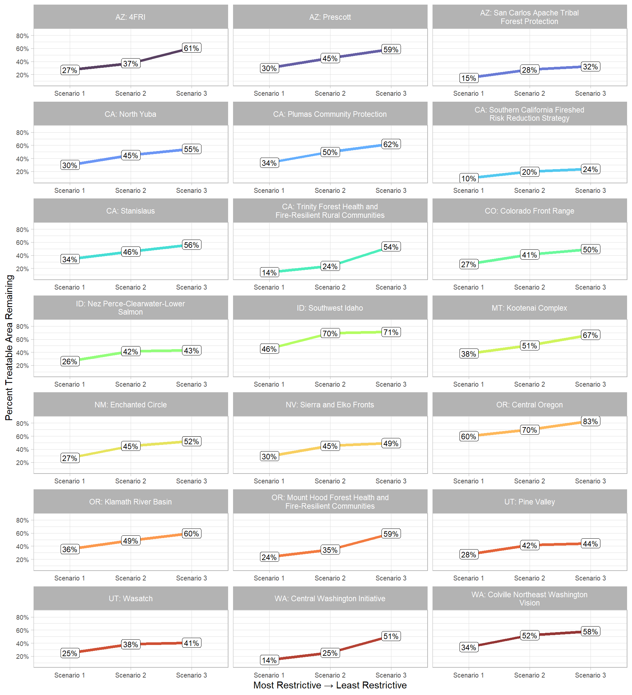
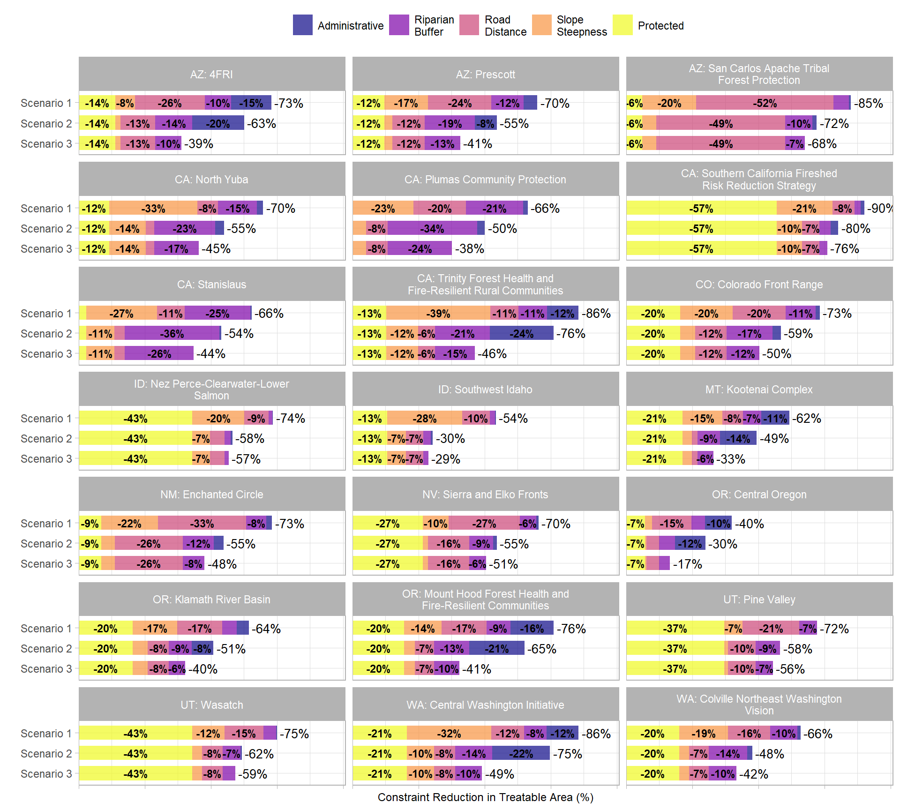

Section 10 Scenario Analysis: WCS Priority Landscapes
See this prior section for initial Wildfire Crisis Strategy (WCS) analysis and background information.
10.1 Scenarios Considered
There are three scenarios considered in this analysis of the constraints to mechanical forest health and fuel reduction treatments:
# mechanical mgmt allowed if:
n_sc_temp <- 3
data.frame(
scenario = 1:3
, cover = rep("Forest or Shrubland",n_sc_temp)
, protected = rep("Not Protected",n_sc_temp)
, slope = c("<35%","<50%","<50%")
, admin = c("No Designation","No Designation","Any Designation")
, riparian = c(">100ft",">100ft",">50ft")
, road = c("<1,000ft","<2,000ft","<2,000ft")
) |>
tidyr::pivot_longer(
cols = -c(scenario)
) |>
tidyr::pivot_wider(
names_from = scenario
, values_from = value
, names_prefix = "scenario_"
) |>
dplyr::mutate(
name = factor(
name
, levels = c(
"cover"
, "protected"
, "slope"
, "admin"
, "riparian"
, "road"
)
, labels = c(
"NLCD Cover Type"
, "Protected or<br>IRA Status"
, "Slope"
, "Administrative<br>Designation"
, "Riparian<br>Buffer"
, "Distance to<br>Nearest Road"
)
, ordered = T
)
) |>
# make table
kableExtra::kable(
caption = "Scenarios Considered for Determining Mechanical Treatment Operability<br>Mechanical treatment allowed if:"
, col.names = c(
""
, "Scenario 1<br>Most Constrained"
, "Scenario 2<br>Moderate"
, "Scenario 3<br>Least Constrained"
)
, escape = F
) |>
kable_classic(full_width=T) |>
kableExtra::kable_styling(font_size = 11,fixed_thead = TRUE)|
Scenario 1 Most Constrained |
Scenario 2 Moderate |
Scenario 3 Least Constrained |
|
|---|---|---|---|
| NLCD Cover Type | Forest or Shrubland | Forest or Shrubland | Forest or Shrubland |
|
Protected or IRA Status |
Not Protected | Not Protected | Not Protected |
| Slope | <35% | <50% | <50% |
|
Administrative Designation |
No Designation | No Designation | Any Designation |
|
Riparian Buffer |
>100ft | >100ft | >50ft |
|
Distance to Nearest Road |
<1,000ft | <2,000ft | <2,000ft |
10.2 Data Preparation
10.2.1 Load landscape-level data
Landscape-level constraint analysis data was created via this Google Earth Engine script; WCS priority landscape spatial data was created in this prior section.
# load wcs priority landscapes
wf_landscapes <- sf::st_read("../data/constrained_by_wflndscp_wide_sf.gpkg") |>
dplyr::select(1:10)
#rename sf geom column
names(wf_landscapes)[names(wf_landscapes)==tolower(attr(wf_landscapes, "sf_column"))] = "geometry"
sf::st_geometry(wf_landscapes) = "geometry"
# set crs
transform_crs <- sf::st_crs(wf_landscapes)
# load landscape constraint scenario data
constrained_by_scnro_ls <- list.files("../data/wildfirepriority/all/",pattern = "\\.csv$") %>%
purrr::keep(stringr::str_starts(.,"wfpriority_all_sc")) %>%
purrr::map(function(x){
readr::read_csv(
paste0("../data/wildfirepriority/all/",x)
, name_repair = "universal"
, col_types = cols(.default = "c")
) %>%
dplyr::rename_with(tolower) %>%
dplyr::rename_with(make.names) %>%
dplyr::select(state,name,tidyselect::ends_with("_m2"),tidyselect::starts_with("pct_")) %>%
dplyr::mutate(scenario_id = stringr::word(x,3,sep="_") %>% readr::parse_number()) %>%
dplyr::relocate(scenario_id)
}) %>%
dplyr::bind_rows() %>%
dplyr::inner_join(
wf_landscapes %>%
sf::st_drop_geometry() %>%
dplyr::select(state,name,area_name)
, by = dplyr::join_by(state,name)
) %>%
dplyr::relocate(area_name,.after = "scenario_id") %>%
dplyr::group_by(area_name,scenario_id) %>%
dplyr::filter(dplyr::row_number()==1) %>%
dplyr::ungroup() %>%
dplyr::mutate(
dplyr::across(
tidyselect::ends_with("_m2")
, ~ as.numeric(.x) / 10000
)
, dplyr::across(
tidyselect::starts_with("pct_")
, ~ as.numeric(.x)
)
) %>%
dplyr::rename_with(
~ gsub("_m2", "_ha", .x)
, tidyselect::ends_with("_m2")
) %>%
# calculate pct reduction
dplyr::mutate(
pct_rdctn1_protected = -1*(1 - pct_rmn1_protected)
, pct_rdctn2_slope = -1*(pct_rmn1_protected - pct_rmn2_slope)
, pct_rdctn3_administrative = -1*(pct_rmn2_slope - pct_rmn3_administrative)
, pct_rdctn4_riparian = -1*(pct_rmn3_administrative - pct_rmn4_riparian)
, pct_rdctn5_roads = -1*(pct_rmn4_riparian - pct_rmn5_roads)
, pct_rdctn_total = -1*(1 - pct_rmn5_roads)
, pct_covertype_area = covertype_area_ha/feature_area_ha
# scenario description
, scenario_lab = factor(
scenario_id
, levels = 1:3
, labels = paste0("Scenario ", 1:3)
, ordered = T
) |> forcats::fct_rev()
, scenario_desc = factor(
scenario_id
, levels = 1:3
, labels = c("Scenario 1\n(status quo)", "Scenario 2\n(slopes+roads)", "Scenario 3\n(slopes+roads+admin)")
, ordered = T
)
)10.3 Load fireshed project area data
Data created via this Google Earth Engine script
See this section for exploration of fireshed and project area spatial data
# load firesheds
fireshed <- sf::st_read("../data/firesheds/fireshed.gpkg") |>
sf::st_transform(transform_crs)
#rename sf geom column
names(fireshed)[names(fireshed)==tolower(attr(fireshed, "sf_column"))] = "geometry"
sf::st_geometry(fireshed) = "geometry"
# load fireshed project areas
fireshed_proj_area <- sf::st_read("../data/firesheds/fireshed_proj_area.gpkg") |>
sf::st_transform(transform_crs)
#rename sf geom column
names(fireshed_proj_area)[names(fireshed_proj_area)==tolower(attr(fireshed_proj_area, "sf_column"))] = "geometry"
sf::st_geometry(fireshed_proj_area) = "geometry"
# load landscape constraint scenario data
constrained_by_scnro_ls_pa <-
list.files("../data/wildfirepriority/fireshed/",pattern = "\\.csv$") %>%
purrr::keep(stringr::str_starts(.,"wfpriority_fireshed_sc")) %>%
purrr::map(function(x){
readr::read_csv(
paste0("../data/wildfirepriority/fireshed/",x)
, name_repair = "universal"
, col_types = cols(.default = "c")
) %>%
dplyr::rename_with(tolower) %>%
dplyr::rename_with(make.names) %>%
dplyr::select(state,name,pa_id,tidyselect::ends_with("_m2"),tidyselect::starts_with("pct_")) %>%
dplyr::mutate(scenario_id = stringr::word(x,3,sep="_") %>% readr::parse_number()) %>%
dplyr::relocate(scenario_id)
}) %>%
dplyr::bind_rows() %>%
dplyr::inner_join(
wf_landscapes %>%
sf::st_drop_geometry() %>%
dplyr::select(state,name,area_name)
, by = dplyr::join_by(state,name)
) %>%
dplyr::relocate(area_name,.after = "scenario_id") %>%
dplyr::mutate(
dplyr::across(
tidyselect::ends_with("_m2")
, ~ as.numeric(.x) / 10000
)
, dplyr::across(
tidyselect::starts_with("pct_")
, ~ as.numeric(.x)
)
) %>%
dplyr::rename_with(
~ gsub("_m2", "_ha", .x)
, tidyselect::ends_with("_m2")
) %>%
dplyr::group_by(area_name,pa_id,scenario_id) %>%
dplyr::arrange(desc(pct_pa_intrsct)) %>%
dplyr::filter(dplyr::row_number()==1) %>%
dplyr::ungroup() %>%
# calculate pct reduction
dplyr::mutate(
pct_rdctn1_protected = -1*(1 - pct_rmn1_protected)
, pct_rdctn2_slope = -1*(pct_rmn1_protected - pct_rmn2_slope)
, pct_rdctn3_administrative = -1*(pct_rmn2_slope - pct_rmn3_administrative)
, pct_rdctn4_riparian = -1*(pct_rmn3_administrative - pct_rmn4_riparian)
, pct_rdctn5_roads = -1*(pct_rmn4_riparian - pct_rmn5_roads)
, pct_rdctn_total = -1*(1 - pct_rmn5_roads)
, pct_covertype_area = covertype_area_ha/feature_area_ha
# calculate level of constraint
, cnstrnt_lvl = dplyr::case_when(
-pct_rdctn_total >= 0.85 ~ 1
, -pct_rdctn_total >= 0.65 ~ 2
, -pct_rdctn_total >= 0.0 ~ 3
)
, cnstrnt_class = factor(
cnstrnt_lvl
, levels = 1:3
, labels = c("high constraint", "med. constraint", "low constraint")
, ordered = T
) %>% forcats::fct_rev()
, rmn_cnstrnt_class = factor(
cnstrnt_lvl
, levels = 1:3
, labels = c("0–15% treatable", "16–35% treatable", ">35% treatable")
, ordered = T
) %>% forcats::fct_rev()
# scenario description
, scenario_lab = factor(
scenario_id
, levels = 1:3
, labels = paste0("Scenario ", 1:3)
, ordered = T
) |> forcats::fct_rev()
, scenario_desc = factor(
scenario_id
, levels = 1:3
, labels = c("Scenario 1\n(status quo)", "Scenario 2\n(slopes+roads)", "Scenario 3\n(slopes+roads+admin)")
, ordered = T
)
) %>%
# join with fireshed data
dplyr::inner_join(
fireshed_proj_area %>%
sf::st_drop_geometry() %>%
dplyr::select(pa_id, tidyselect::starts_with("pa_exposure"), tidyselect::starts_with("fireshed_")) %>%
dplyr::mutate(pa_id=as.character(pa_id))
, by = dplyr::join_by(pa_id)
)10.4 Landscape-level analysis
10.4.1 Reduction Treatable Area Table
scnum_temp<-2
tbl_temp <- constrained_by_scnro_ls |>
dplyr::filter(scenario_id==scnum_temp) |>
dplyr::mutate(
dplyr::across(
tidyselect::ends_with("_ha")
, ~ scales::comma(.x, accuracy = 1)
)
, dplyr::across(
tidyselect::starts_with("pct_")
, ~ scales::percent(.x, accuracy = 0.1)
)
) |>
dplyr::select(
state
, name
, covertype_area_ha
, pct_covertype_area
, pct_rdctn1_protected
, pct_rdctn2_slope
, pct_rdctn3_administrative
, pct_rdctn4_riparian
, pct_rdctn5_roads
, rmn5_roads_area_ha
, pct_rmn5_roads
) |>
dplyr::arrange(state,name)
# make table
kableExtra::kable(
tbl_temp |> dplyr::select(-c(state))
, caption = paste0("<b><font color=navy>Scenario ",scnum_temp,"</font></b><br>percent reduction of different types of constraints on mechanical treatment")
, col.names = c(
""
, "Forest+Shrub\n(ha)", "Forest+Shrub\n%"
, "Protected"
, "Slope\nSteepness"
, "Administrative"
, "Riparian\nBuffer"
, "Road\nDistance"
, "Remaining (ha)"
, "Remaining (%)"
)
, escape = F
) |>
add_header_above(c(" " = 1, "Area of\nPriority Landscape"=2, "Constraint\nLeast Flexible to Most Flexible" = 5, " " = 2)) |>
kable_classic(full_width=T) |>
pack_rows(index = table(forcats::fct_inorder(tbl_temp$state))) |>
kableExtra::kable_styling(font_size = 11,fixed_thead = TRUE) |>
kableExtra::scroll_box(width = "740px")| Forest+Shrub (ha) | Forest+Shrub % | Protected | Slope Steepness | Administrative | Riparian Buffer | Road Distance | Remaining (ha) | Remaining (%) | |
|---|---|---|---|---|---|---|---|---|---|
| Arizona | |||||||||
| 4FRI | 2,190,804 | 90.6% | -13.8% | -4.1% | -27.5% | -10.0% | -7.5% | 811,975 | 37.1% |
| Prescott | 219,110 | 86.4% | -12.1% | -7.9% | -11.0% | -17.9% | -7.7% | 95,155 | 43.4% |
| San Carlos Apache Tribal Forest Protection | 1,056,065 | 91.4% | -6.1% | -11.0% | -2.5% | -19.0% | -34.6% | 282,658 | 26.8% |
| California | |||||||||
| North Yuba | 139,202 | 96.5% | -11.6% | -22.6% | -5.0% | -19.4% | -1.3% | 55,989 | 40.2% |
| Plumas Community Protection | 100,872 | 93.3% | 0.0% | -11.4% | -6.0% | -31.6% | -3.7% | 47,658 | 47.2% |
| Southern California Fireshed Risk Reduction Strategy | 1,408,168 | 86.0% | -57.0% | -14.8% | -3.9% | -3.7% | -3.8% | 236,325 | 16.8% |
| Stanislaus | 116,139 | 94.3% | -2.9% | -16.7% | -1.8% | -33.6% | -1.4% | 50,559 | 43.5% |
| Trinity Forest Health and Fire-Resilient Rural Communities | 295,916 | 80.4% | -12.9% | -23.4% | -31.3% | -9.4% | -1.6% | 63,217 | 21.4% |
| Colorado | |||||||||
| Colorado Front Range | 1,051,540 | 72.6% | -20.4% | -11.1% | -6.8% | -16.8% | -6.0% | 408,302 | 38.8% |
| Idaho | |||||||||
| Nez Perce-Clearwater-Lower Salmon | 699,884 | 89.0% | -43.0% | -11.8% | -0.7% | -2.2% | -4.2% | 266,295 | 38.0% |
| Southwest Idaho | 608,338 | 87.6% | -13.3% | -15.3% | -1.5% | -2.7% | -4.4% | 381,579 | 62.7% |
| Montana | |||||||||
| Kootenai Complex | 372,345 | 91.4% | -21.4% | -7.8% | -15.1% | -6.9% | -1.2% | 177,160 | 47.6% |
| Nevada | |||||||||
| Sierra and Elko Fronts | 1,003,525 | 73.2% | -26.6% | -4.8% | -2.6% | -10.2% | -12.0% | 439,369 | 43.8% |
| New Mexico | |||||||||
| Enchanted Circle | 506,460 | 85.6% | -8.5% | -11.6% | -5.1% | -13.7% | -18.5% | 215,496 | 42.5% |
| Oregon | |||||||||
| Central Oregon | 937,977 | 88.8% | -7.2% | -1.2% | -12.9% | -5.2% | -3.8% | 652,634 | 69.6% |
| Klamath River Basin | 2,900,530 | 77.7% | -20.5% | -10.5% | -9.9% | -6.8% | -5.4% | 1,362,076 | 47.0% |
| Mount Hood Forest Health and Fire-Resilient Communities | 334,397 | 76.7% | -19.6% | -8.1% | -26.4% | -8.8% | -4.2% | 110,395 | 33.0% |
| Utah | |||||||||
| Pine Valley | 153,246 | 94.2% | -37.2% | -3.4% | 0.0% | -10.6% | -8.2% | 62,385 | 40.7% |
| Wasatch | 381,429 | 89.5% | -43.0% | -7.1% | -0.6% | -7.3% | -5.8% | 137,670 | 36.1% |
| Washington | |||||||||
| Central Washington Initiative | 670,440 | 68.1% | -20.6% | -19.8% | -25.1% | -9.0% | -3.4% | 148,732 | 22.2% |
| Colville Northeast Washington Vision | 655,989 | 92.8% | -20.1% | -8.9% | -2.5% | -14.7% | -5.0% | 320,175 | 48.8% |
10.4.2 Change in Available by Scenario
ggplot(
data = constrained_by_scnro_ls
, mapping = aes(x=scenario_desc,y=pct_rmn5_roads,group=area_name)
) +
geom_line(mapping=aes(color = area_name), linewidth = 1.5) +
geom_label(
mapping=aes(label = scales::percent(pct_rmn5_roads, scale = 100, accuracy = 1))
, color = "black"
, size = 3
, label.padding = unit(0.15, "lines")
) +
facet_wrap(facets = vars(area_name)
, ncol = 3
, labeller = label_wrap_gen(width = 35, multi_line = TRUE)
) +
scale_color_viridis_d(option = "turbo", alpha = 0.8) +
scale_y_continuous(expand = expansion(mult = c(0.1, 0.1)), labels = scales::percent_format(), breaks = scales::extended_breaks(6)) +
# scale_x_discrete(labels = scales::label_wrap(20)) +
labs(
x = "Most Restrictive \U2192 Least Restrictive"
, y = "Percent Treatable Area Remaining"
) +
theme_light() +
theme(
legend.position = "none"
, axis.text.y = element_text(size=7)
)
10.4.3 Reduction by Constraint
# reshape
constrained_by_scnro_ls_long <- constrained_by_scnro_ls |>
dplyr::select(state, name, area_name, tidyselect::starts_with("scenario_"), tidyselect::starts_with("pct_rdctn")) |>
tidyr::pivot_longer(
cols = tidyselect::starts_with("pct_rdctn")
, names_to = "constraint"
, values_to = "pct_rdctn"
, names_prefix = "pct_rdctn"
, values_drop_na = F
) |>
tidyr::separate_wider_delim(constraint, "_", names = c("constraint_lvl", "constraint")) |>
dplyr::mutate(
constraint_lvl = as.numeric(constraint_lvl)
, constraint = factor(
constraint
, ordered = TRUE
, levels = c(
"protected"
, "slope"
, "administrative"
, "riparian"
, "roads"
, "total"
)
, labels = c(
"Protected"
, "Slope\nSteepness"
, "Administrative"
, "Riparian\nBuffer"
, "Road\nDistance"
, "Total"
)
) |> forcats::fct_rev()
) |>
dplyr::left_join(
constrained_by_scnro_ls |> dplyr::select(state,name,scenario_id,pct_rdctn_total)
, by = join_by(state,name,scenario_id)
)
# plot
ggplot() +
geom_col(
data = constrained_by_scnro_ls_long |> dplyr::filter(constraint!="Total")
, mapping = aes(y = scenario_lab, x = pct_rdctn, fill = constraint)
, color = NA, width = 0.7
) +
geom_text(
data = constrained_by_scnro_ls_long |> dplyr::filter(constraint!="Total")
, mapping = aes(
y = scenario_lab, x = pct_rdctn
, label = scales::percent(ifelse(pct_rdctn<.06*-1,pct_rdctn,NA), accuracy = 1)
, fontface = "bold"
)
, position = position_stack(vjust = 0.5)
, color = "black", size = 3
) +
geom_text(
data = constrained_by_scnro_ls_long |> dplyr::filter(constraint=="Total")
, mapping = aes(
y = scenario_lab, x = pct_rdctn_total
, label = scales::percent(pct_rdctn_total, accuracy = 1)
)
, color = "black", size = 3.5
, hjust = -0.1
) +
facet_wrap(facets = vars(area_name)
, ncol = 3
, labeller = label_wrap_gen(width = 35, multi_line = TRUE)
) +
scale_fill_viridis_d(option = "plasma", alpha = 0.7) +
scale_x_reverse(expand = expansion(mult = c(0, .1)),labels = scales::percent_format()) +
labs(
fill = ""
, y = ""
, x = "Constraint Reduction in Treatable Area (%)"
) +
theme_light() +
theme(
legend.position = "top"
, legend.direction = "horizontal"
, legend.title = element_text(size=7)
, axis.title = element_text(size=9)
, axis.text.x = element_blank()
)